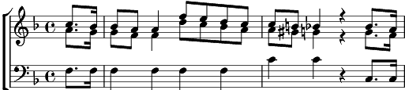

Luci care, luci belle
Fa majeur
Paroles: Métastase
Musique: Wolfgang Amadeus Mozart

Luci care, luci belle, cari lumi amate stelle
Date calma a questo core,
Date calma a questo core.
Se per voi sospiro e moro,
Idol mio, mio bel tesoro,
Forza e solo del Dio d'amore
Forza e sol del dio d'amore.